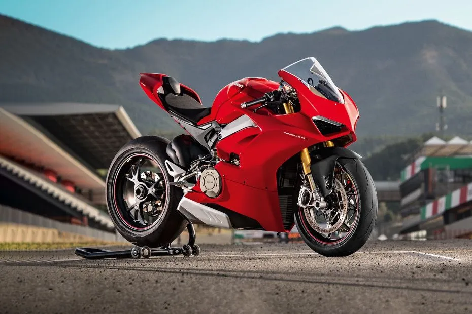
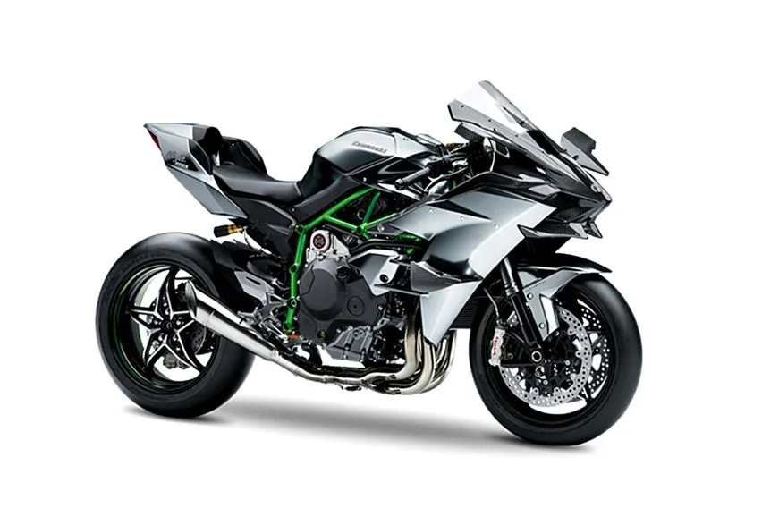

FEATURED

DUCATI PANIGALE V4
Ducati Panigale V4 adalah motor sport dengan mesin 90° V4 desmodromic 1.103 cc yang diperkenalkan oleh Ducati pada tahun 2018 sebagai penerus mesin V-twin 1299. untuk harganya mulai 799jt
Selengkapnya

KAWASAKI H2R
Motor ini sarat dengan performa, sehingga kami sarankan kalau baru beberapa kali naik moge, jangan dulu naik Kawasaki ini. Mesin empat silinder 998 cc, berimbuhan supercharger dengan tenaga buas membuatnya sulit ditaklukan. untuk harganya mulai 610 jt
Selengkapnya
ZX25R
Kawasaki Ninja ZX-25R adalah sebuah sepeda motor sport bermesin 249 cc dengan konfigurasi 4 silinder segaris yang diproduksi oleh Kawasaki di Indonesia dan Thailand sebagai penerus dari Ninja ZX-2R/ZXR250 yang diproduksi antara tahun 1988 dan 1997 , untuk harganya mulai 98 jt
Selengkapnya